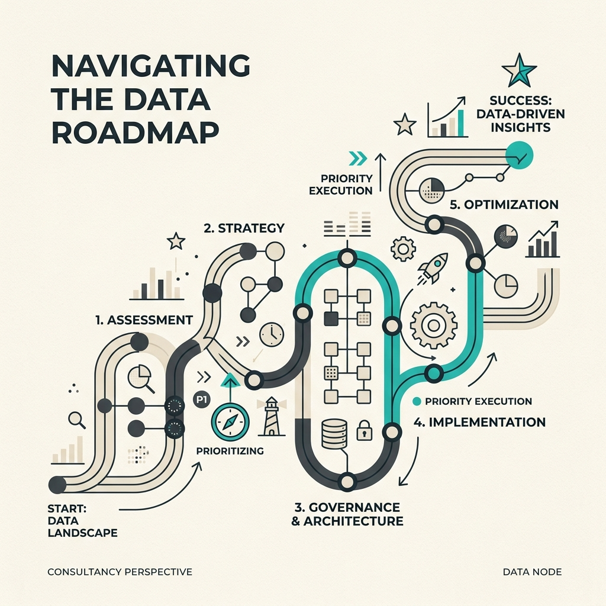
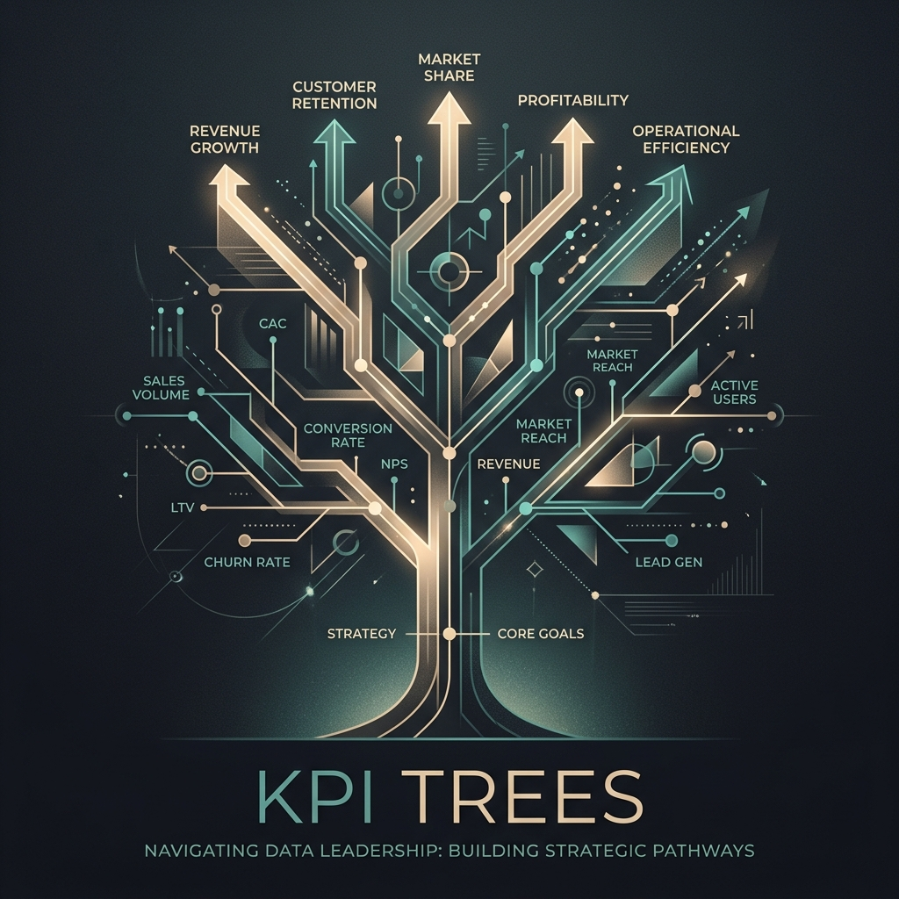
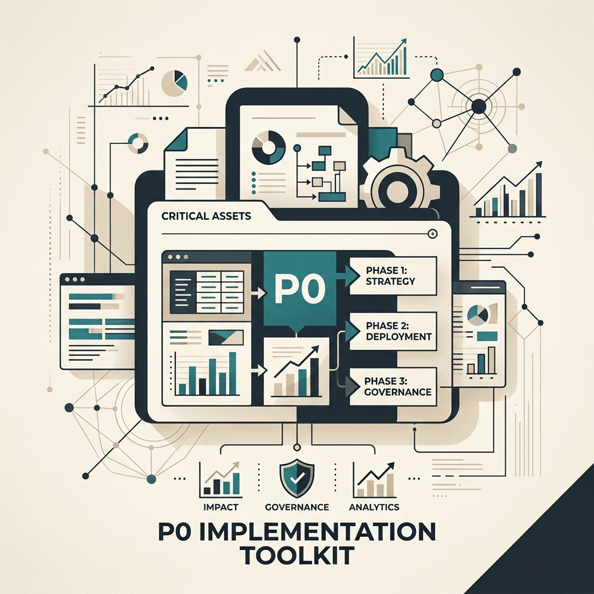

Data Analytics Strategy from the Ground Up
Building a scalable decision system for SMEs and startups that need clarity, not just charts.
- Green-field strategy design
- Tooling & stack selection
- Data-driven decision frameworks

Data Biz helps executives and data leaders cut through KPI confusion, prioritization chaos, and vague AI ambition.
Data Biz helps executive teams and data leaders make better operating decisions around metrics, prioritization, org shape, and AI. The focus is business clarity, decision quality, and execution leverage.
Short, sharp, senior support for teams that need clarity fast.
Building a scalable decision system for SMEs and startups that need clarity, not just charts.
End-to-end setup of your modern data stack from the ground up in weeks, not months.
When leadership teams have dashboards but no clean logic behind the numbers.
When every data asset is called critical and nobody believes the priority model anymore.
Transitioning between centralized, decentralized, and mesh models without the friction.
Translating technical complexity into business impact that the C-suite actually respects.
Building high-performing data cultures that attract, vet, and retain top talent.
Leveling up senior individual contributors to become high-impact strategic business partners.
Jimmy Pang is a BI and Analytics Engineering leader with over 8 years of experience building data infrastructure and high-performing teams across eCommerce, logistics, and luxury fashion.
Before founding Data Biz, Jimmy led BI and analytical engineering initiatives at Vestiaire Collective, HelloFresh, and Delivery Hero. He specializes in bridging the gap between technical complexity and C-suite decision-making, helping leaders turn "data theatre" into operational leverage.

Frameworks don't fix politics; they just make the trade-offs visible.
Read the article →
Designing metric structures that executives actually care about.
Read the article →
Practical tools to protect your most critical data assets.
Read the article →Start with a short discovery call. No deck theatre. Just a direct conversation about where things are stuck.
Book a discovery call